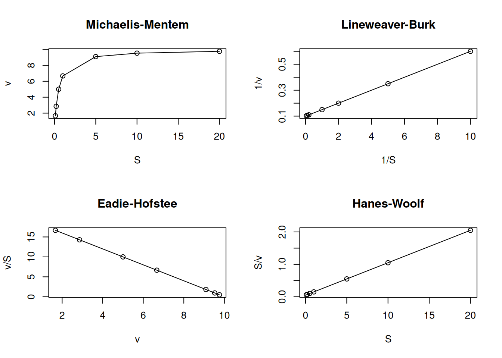
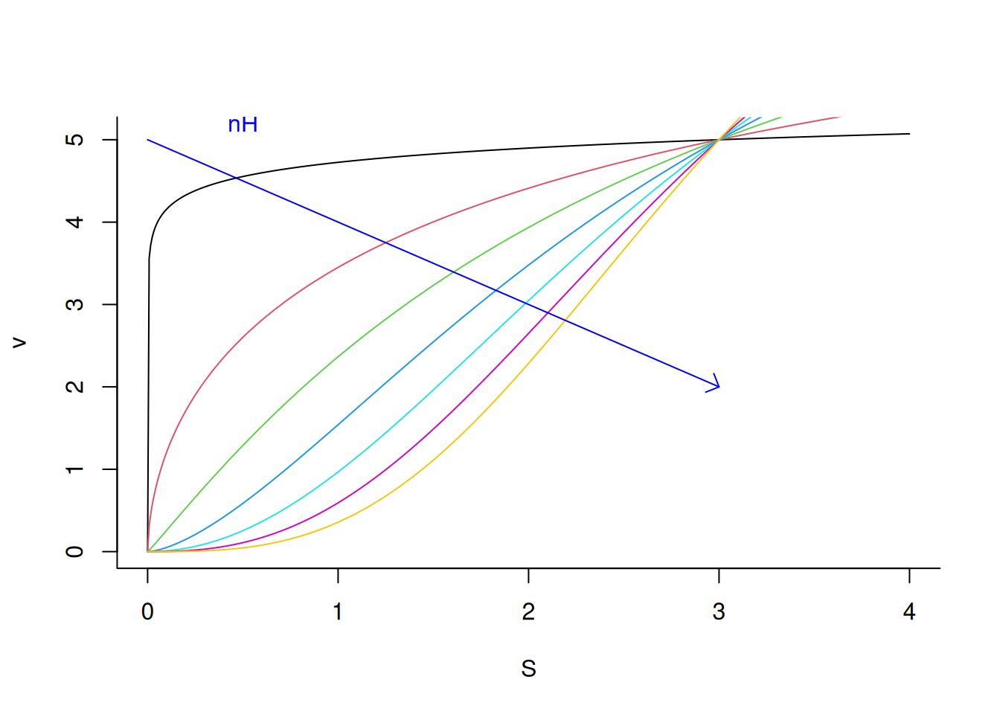

In general, enzymes are studied from different points of view, such as their structure, mechanism of action, and kinetic behavior. This chapter aims to work on the latter, with the help of R.
In general, the simplified equation that describes the activity of an enzyme E on a substrate S can be written as:
Where P represents the product of the reaction, ES the activated complex in the transition state, and k1, k2 and k3 the reaction rate constants.
Using the Briggs-Haldane approximation for steady state, and the Henri-Michaelis-Menten treatment, the equation that defines the rate curve of the enzymatic reaction as a function of the substrate content can be described below:
\[
v=\frac{Vm*S}{Km+S}
\tag{2}\]
Where Km represents the Michaelis-Menten constant, and Vm the limiting rate of the reaction (sometimes erroneously called maximum rate, although the quadratic hyperbola described by the function does not exhibit a maximum value because it does not reach an asymptote). In turn, Km can be defined from the rate constants of Equation 1 as:
\[
Km=\frac{k1+k3}{k2}
\tag{3}\]
Therefore, given the values of Vm and Km, we can describe a Michaelis-Menten behavior for an enzyme as:
# Michaelis-Menten kinetic curveVm <-10Km <-0.5curve(Vm * x / (Km + x),xlim =c(0, 10),xlab ="[S]", ylab ="v")abline(h =5, lty =2, col ="blue")abline(v =0.5, lty =2, col ="blue")text(x =1, y =0.2, "Km", col ="blue")text(1, 5.3, "Vm/2", col ="blue")
Figure 1: Michaelis-Menten curve for an enzyme exhibiting Vm=10 and Km=0.5 (50 curves).
By this relationship, the value of Km is represented by the substrate content that gives half the value of Vm to the reaction. Note that by Equation 2 the value of Km in the denominator inversely influences the speed v of the reaction; that is, the higher the value of Km, the lower the rate of the enzymatic reaction. This can be illustrated iteratively with a loop, as follows:
Vm <-10Km <-seq(from =0.1, to =10, by =0.2) # sequence for 50 values of Kmfor (i in1:length(Km)) { # loop to add Michaelis-Menten curve#for each value of Kmadd <-if (i ==1) FALSEelseTRUE# flow control that allows addition#of curve from the second iteration (i.e. when i > 1)curve(Vm * x / (Km[i] + x),col = i, lwd =0.8, from =0, to =10, n =100,xlab ="[S}", ylab ="v", add = add)}arrows(0.5, 9, 3, 6, length =0.1, angle =45, col ="blue") # arrow for Kmtext(0.2, 9, "Km", col ="blue") # indexer for Km
Figure 2: Michaelis-Menten curves with iterative variation for Km from 0.1 to 10.
The curves represented in figures Figure 1 and Figure 2) were produced with Equation 2, and it is possible to extract the kinetic parameters Vm and Km easily, since there are no computed deviations for the initial velocity of the reaction. If, on the other hand, we are faced with experimental values of a catalysis with Michaelinan behavior and we wish to extract the kinetic parameters, it would be better to fit the nonlinear Michaelis-Menten equation directly (algorithms such as Gauss-Newton, Simplex, Levenberg-Marquadt) or, more simply, transform the variables S and v in such a way that they allow a linear fit by least squares.
However, the function that describes the Michaelis-Menten equation constitutes a quadratic hyperbola and, as such, does not have a mathematical asymptote, only a visual one. In fact, the authors of the original work, Leonor Michaelis and Maud Mentem, reported their data with the representation of S on the logarithmic axis, allowing better visualization of the asymptotic region of the graph (Michaelis and Menten 1913).
Obtaining kinetic parameters from simulated experimental data
To determine the kinetic parameters Vm and Km obtained from an experimental simulation of S and v data, it is first necessary to obtain the experimental points, as follows:
Vm <-10Km <-0.5set.seed(1500) # sets the seed for generating reproducible random dataerror <-runif(20, 0, 1) # command for uniform error (no. of points, min, max)curve(Vm * x / (Km + x) + error,type ="p", from =0, to =1, n =20,xlab ="[S}", ylab ="v") # curve creation with uniform error computation
Figure 3: Simulation of experimental points (n=20) obtained from the Michaelis-Menten equation.
Note that by Figure 3, it is no longer possible to define an asymptotic region that allows the determination of Vm and, consequently, of Km. In this case, the kinetic parameters can be obtained by transforming the Michaelis-Mentem hyperbolic function into a correlated linear function, followed by linear adjustment of the transformed data to obtain the catalysis parameters.
Linearizations and adjustments
There are several linearizations found in the literature for the Michaelis-Mentem equation. To illustrate them, below is a code excerpt containing the four most commonly used. For this purpose, a pair of R functions were used to, respectively, establish the graphic area and its subdivision for plotting in 4 panels (par and mfrow or mfcol):
S <-c(0.1, 0.2, 0.5, 1, 5, 10, 20) # creates a vector for substrateKm <-0.5Vm <-10# establishes the enzymatic parametersv <- Vm * S / (Km + S) # applies the MM equation to the S vectorpar(mfrow =c(2, 2)) # establishes plot area for 4 graphsplot(S, v, type ="o", main ="Michaelis-Mentem")plot(1/ S, 1/ v, type ="o", main ="Lineweaver-Burk")plot(v, v / S, type ="o", main ="Eadie-Hofstee")plot(S, S / v, type ="o", main ="Hanes-Woolf")layout(1) # return to normal graphics window

Figure 4: Main linearizations of the Michaelis-Menten equation.
Among these linear transformations for enzyme kinetics, the most frequently found are Lineweaver-Burk (or double-reciprocal), and Eadie-Hofstee, the first being the most common in the literature. However, the application of the Eadie-Hofstee formalism for ligand-protein interactions is also the most reported in this area, although it is treated as a Scatchard representation (Scatchard 1949).
Linearization by Lineweaver-Burk transformation
The linear form for the Lineweaver-Burk equation is obtained from the transformation of the Michaelis-Menten equation as follows:
In this way, the data obtained by Figure 3 are transformed to their double reciprocal, resulting in:
S <-seq(0.1, 1, length.out =20) # generate a sequence with 20 points between# 0 and 1 for substrate valuesVm <-10Km <-0.5# kinetic parametersset.seed(1500) # establish the same random seed as the direct# Michaelis-Menten plot, for reproducibility of pointserror <-runif(20, 0, 1) # command for uniform error (no. of points, min, max)v <- Vm * S / (Km + S) + error # Michaelis-Menten equationinv.S <-1/ S # create variables for the double reciprocalinv.v <-1/ vplot(inv.v ~ inv.S, xlab ="1/S", ylab ="1/v") # plot the# Lineweaver-Burk plot
Figure 5: Lineweaver-Burk representation for the simulated data of the Michaelis-Menten curve.
Note that Figure 5 now presents a distribution of values that allows its linear fit by least squares (linear regression). In R, this can be easily done by the following code snippet (chunk):
reg.LB <-lm(inv.v ~ inv.S) # expression for linear fitsummary(reg.LB) # results of the fit
Call:
lm(formula = inv.v ~ inv.S)
Residuals:
Min 1Q Median 3Q Max
-0.028198 -0.009858 -0.003496 0.007482 0.028416
Coefficients:
Estimate Std. Error t value Pr(>|t|)
(Intercept) 0.113634 0.005147 22.08 1.74e-14 ***
inv.S 0.032772 0.001461 22.42 1.33e-14 ***
---
Signif. codes: 0 '***' 0.001 '**' 0.01 '*' 0.05 '.' 0.1 ' ' 1
Residual standard error: 0.01459 on 18 degrees of freedom
Multiple R-squared: 0.9654, Adjusted R-squared: 0.9635
F-statistic: 502.8 on 1 and 18 DF, p-value: 1.325e-14
plot(inv.v ~ inv.S, xlab ="1/S", ylab ="1/v") # Lineweaver-Burk plotabline(reg.LB, col ="blue") # overlay of the fit on the plot
Figure 6: Linear fit for Lineweaver-Burk data.
The table produced by R for the lm function of linear least squares fit has several pieces of information that allow us to evaluate the quality of the regression. Briefly, this table provides us with the value of each parameter of the adjustment according to the following equation:
\[
y = a + b *x
\tag{5}\]
In this case, a refers to the intercept in the table ((intercept), or 1/Vm) and b to the slope (inv.S, or Km/Vm). In addition, the table also provides several complementary results, listed below:
standard error value of the parameters (Std. Error);
value of the Student’s t distribution (t value);
the respective probability level (Pr) with indication of significance (asterisks);
residual standard error (Residual standard error);
value of the gross coefficients of determination (Multiple R-squared) and adjusted for the degrees of freedom (Adjusted R-squared);
value of the Snedocor F distribution (F-statistic) of the variance of the adjustment;
degrees of freedom (DF) and the significance value of the regression to the linear model obtained by the analysis of variance (p-value).
Nevertheless, the quality of the linear adjustment can also be verified by producing statistical diagnostic graphs, simply by applying the simple excerpt below:
plot(reg.LB) # command to generate diagnostic graphs of linear adjustment
These diagnostic graphs can also be allocated to panels, as illustrated for the Michaelis-Mentem linearizations above.
{r, echo =TRUE, label="fig-figLinDiag", fig.cap="Graph the linear adjustment diagnostics."} reg.LB <- lm(inv.v ~ inv.S) par(mfrow = c(2, 2)) plot(reg.LB) layout(1)
The four graphs generated above refer, respectively, to 1) the variation of residuals with the adjusted values, 2) a test of normal distribution of residuals, 3) the variation of standardized residuals as a function of the adjusted values, and 4) the observation of influenceable values identifiable by the Cook’s distance for each observation. Regarding the latter, one can optionally define its appearance to identify those values by selection (which, 4 or 6, for example), as in:
plot(reg.LB, which =4)
Through these two procedures, table and diagnostic graphs, it is possible to assess the quality of a linear adjustment by R. In parallel, there are several associated functions to the lm function itself for linear models (objects), which reinforces the object-oriented language character of R. Among these, it is worth mentioning, with intuitive meaning, coef, fitted, predict, residuals, confint, and deviance.
To access the parameters contained in the lm function, as well as others of the same nature in R, simply type args:
args(lm)
function (formula, data, subset, weights, na.action, method = "qr",
model = TRUE, x = FALSE, y = FALSE, qr = TRUE, singular.ok = TRUE,
contrasts = NULL, offset, ...)
NULL
In addition, it is worth mentioning the existence of numerous R packages for various situations and statistical treatments of data for linear models, and which are beyond the scope of this manuscript, such as those that allow analysis of outliers (extreme values), Generalized Linear Models, Mixed Effects Models, Non-parametric Regression, among others. Among the R packages that are complementary to linear regression, it is worth mentioning car, MASS, caret, glmnet, sgd, BLR, and Lars.
Considerations on Lineweaver-Burk linearization.
Returning to the study of steady-state kinetics of enzymatic catalysis, we mentioned above the possibility of linearizing the Michaelis-Menten equation by two of the most common treatments, Lineweaver-Burk and Eadie-Hofstee. In general, any treatment that results in the transformation of an original model (Michaelis-Menten equation, in this case) by linearization will result in statistical deviations.
Analyzing the Lineweaver-Burk equation, for example, it can be seen that, since the values of S and v are represented by their reciprocals, a small variation in v will result in a large variation in 1/v. On the other hand, the choice of the S content range is also extremely important for the extraction of kinetic parameters. This can be illustrated in the following example:
Vm <-10Km <-0.5set.seed(1500) # fixed seed for random errorerror <-runif(length(S), 0, 0.1)S <-seq(1, 10, 0.1)v <- Vm * S / (Km + S) + errorplot(v ~ S, xlab ="S", ylab ="v")
Figure 7: Michaelis-Mentem curve simulated with random experimental error. Vm=10; Km=0.5.
Note that Figure 7 starts at a speed close to zero, and ends at a speed close to Vm, with a content of S >> Km (50 times, in fact). This condition allows a safe extraction of the kinetic parameters, which can be obtained from the linear fit of the double-reciprocal plot.
# Chunk for Lineweaver-Burkset.seed(1500) # fixed seed for random errorerror <-runif(length(S), 0, 0.2)Vm <-10Km <-0.5# kinetic parametersinv.S <-1/seq(1, 10, 0.1) # 1/Sinv.v <-1/ (Vm * S / (Km + S) + error) # 1/vplot(inv.S, inv.v)lm.LB2 <-lm(inv.v ~ inv.S) # linear fitsummary(lm.LB2) # fit results
Call:
lm(formula = inv.v ~ inv.S)
Residuals:
Min 1Q Median 3Q Max
-0.0015050 -0.0005613 -0.0001463 0.0007522 0.0014122
Coefficients:
Estimate Std. Error t value Pr(>|t|)
(Intercept) 0.0991811 0.0001356 731.3 <2e-16 ***
inv.S 0.0481555 0.0004193 114.9 <2e-16 ***
---
Signif. codes: 0 '***' 0.001 '**' 0.01 '*' 0.05 '.' 0.1 ' ' 1
Residual standard error: 0.0007741 on 89 degrees of freedom
Multiple R-squared: 0.9933, Adjusted R-squared: 0.9932
F-statistic: 1.319e+04 on 1 and 89 DF, p-value: < 2.2e-16
abline(lm.LB2, col ="blue")
Figure 8: Lineweaver-Burk from previous plot data.
Notice how the adjusted Vm and Km values came close to the predicted values, since for the double-reciprocal plot:
\[
Vm=\frac{1}{intercept} ;
\\
Km = intercept * Vm
\tag{6}\]
Now, what would happen if the experimental points were in different S content ranges? For example, if the points were collected in three different S regions: 10-100, 30-100, and 50-100?
This can be illustrated by varying the S value range iteratively, and inspecting the resulting double-reciprocal plot as in the code snippet that follows, and for the same values as in Figure 8.
# Chunk for double-reciprocals of simulated data with variation in [S]set.seed(1500) # same random seed for error reproducibilityVm <-10Km <-0.5# sets the MM parametersS <-seq(10, 100, 10) # creates an initial sequence for Sv <- Vm * S / (Km + S) # applies the MM equation to Splot(1/ S, 1/ v, type ="n", ylim =c(0.098, 0.106)) # builds the# double-reciprocal without pointsfor (i in1:3) { # starts iteration for Lineweaver-Burk graphsS <-seq(10* i, 100, length.out =100) # generates a sequence S with# 100 points, producing 5 vectors that start at different values# for S (10, 30 and 50)error <-runif(length(S), 0, 0.1) # error for addition to the initial# velocity vector, with no. of points as a function of the vector Sadd <-if (i ==1) FALSEelseTRUE# control flow for plotting# of points in the empty graphinv.S <-1/ Sinv.v <-1/ ((Vm * S / (Km + S)) + error) # new values for the# double-reciprocal as a function of iterationpoints(inv.v ~ inv.S, xlab ="1/S", ylab ="1/v", col = i, add = add)# addition of points to the Lineweaver-Burk plot, with identification# by colors (1, 2, 3, 4 and 5)lm.LB <-lm(inv.v ~ inv.S) # perform the linear fitabline(lm.LB, col = i, lty = i) # overlay the fit lines}
Figure 9: Double-reciprocal plots for the simulated Michaelis-Menten curve, for different initial S values.
Now notice that from the resulting Figure 9, both the intercept and slope obtained from the fits were dependent on the selection range of S, which results in different values for Vm and Km. This shows how the selection of the range of S for the calculation of Km and Vm is crucial.
Linearization by Eadie-Hofstee transformation
As already mentioned, the two most common linearizations of the Michaelis-Menten equation refer to the one in the subtitle above. The Eadie-Hofstee linearization equation is given below:
\[
v = \frac{1}{Km} * \frac{v}{S} + Vm
\tag{7}\]
From the Figure 3 data, the kinetic parameters are obtained directly from the intercept (Vm) and the linear slope (1/Km) by:
# Eadie-Hofstee linearizationVm <-10Km <-0.5set.seed(1500) # fixed seed for random errorerror <-runif(length(S), 0, 0.1)S <-seq(1, 10, 0.1)v <- Vm * S / (Km + S) + errorv.S <- v / Splot(v.S ~ v, xlab ="v", ylab ="v/S")lm_EH <-lm(v.S ~ v)summary(lm_EH)
Call:
lm(formula = v.S ~ v)
Residuals:
Min 1Q Median 3Q Max
-0.11602 -0.06496 0.01172 0.05466 0.12483
Coefficients:
Estimate Std. Error t value Pr(>|t|)
(Intercept) 20.31073 0.07906 256.9 <2e-16 ***
v -2.02191 0.00893 -226.4 <2e-16 ***
---
Signif. codes: 0 '***' 0.001 '**' 0.01 '*' 0.05 '.' 0.1 ' ' 1
Residual standard error: 0.07036 on 98 degrees of freedom
Multiple R-squared: 0.9981, Adjusted R-squared: 0.9981
F-statistic: 5.126e+04 on 1 and 98 DF, p-value: < 2.2e-16
abline(lm_EH, col ="blue")
Error distribution in Michaelis-Mentem linearizations
Although both representations, Lineweaver-Burk and Eadie-Hofstee, are the most widely used and present similarities in obtaining kinetic parameters, their residual distribution is quite different, as is the case with other Michaelis-Mentem linear transformations (Figure 4).
The code below illustrates the error distribution of these transformations, introducing an important R function for constructing graphs with error bars: arrows.
# Random errors in eq. MM and linearizationsVm <-10Km <-0.5# fix MM parametersset.seed(1500) # fix seed for random errorerror <-runif(length(S), 0, 0.5) # uniform error vectorS <-c(0.1, 0.2, 0.5, 1, 5, 10, 20) # substrate vectorv <- Vm * S / (Km + S) # MM equationpar(mfrow =c(2, 2)) # plot area for 4 graphsplot(S, v, type ="o", main ="Michaelis-Mentem")arrows(S, v, S, v - error, length = .05, angle =90) # lower error bararrows(S, v, S, v + error, length = .05, angle =90) # upper error bar errorplot(1/ S, 1/ v, type ="o", main ="Lineweaver-Burk")arrows(1/ S, 1/ v, 1/ S, 1/ (v - error), length = .05, angle =90)arrows(1/ S, 1/ v, 1/ S, 1/ (v + error), length = .05, angle =90)plot(v, v/S, type ="o", main ="Eadie-Hofstee")arrows(v, v / S, v, (v - error) / S, length = .05, angle =90)arrows(v, v / S, v, (v + error) / S, length = .05, angle =90)plot(S, S / v, type ="o", main ="Hanes-Woolf")arrows(S, S / v, S, S / (v - error), length = .05, angle =90)arrows(S, S / v, S, S / (v + error), length = .05, angle =90)par(mfrow =c(1, 1)) # return to normal graphics window
Figure 10: Distribution of random errors for the Michaelis-Mentem equation and its linear transformations.
From the graph in Figure 10 it is clear that the Lineweaver-Burk and Eadie-Hofstee transformations, although prevalent in the literature, are those that present the greatest error variability based on experimental data, which leads to lower precision in determining kinetic parameters. Furthermore, it is observed that the Hanes-Woolf transformation is the one that presents the smallest residual dispersion among the others, equaling the experimental errors of the Michaelis-Mentem hyperbolic equation. Despite this, the Hanes-Woolf linearization is rarely reported in the literature.
Although the double-reciprocal representation has some disadvantages, such as the dispersion of errors, especially at low values of S, it is the only one among those mentioned that allows a linear adjustment by least squares, if we consider the statistical premises of this.
In order to obtain intercept and slope parameters from a linear regression, it is necessary to comply with the statistical premises of 1) normal distribution of residuals, 2) homogeneity of variances , and 3) independence of the variables. If we observe the three linearizations, both the Eadie-Hofstee and the Hanes-Woolf do not fulfill the premise of independence, since the dependent variable (y) is a function of the independent variable (x).
In order for a double-reciprocal transformation to be used more faithfully to obtain kinetic parameters, however, the weight calculation in the linear adjustment formula can be adopted, as suggested by Wilkinson (Wilkinson 1961), considering it as the reciprocal of the estimated variances. In this case, the linear fit considering the square of the random error vector as variance and the weight as its reciprocal (1/s²), can be sketched as:
Call:
lm(formula = inv.v ~ inv.S, weights = 1/error^2)
Weighted Residuals:
Min 1Q Median 3Q Max
-0.04779 -0.02231 -0.01849 0.00162 0.04830
Coefficients:
Estimate Std. Error t value Pr(>|t|)
(Intercept) 0.117327 0.002545 46.11 < 2e-16 ***
inv.S 0.034906 0.001452 24.04 3.93e-15 ***
---
Signif. codes: 0 '***' 0.001 '**' 0.01 '*' 0.05 '.' 0.1 ' ' 1
Residual standard error: 0.02967 on 18 degrees of freedom
Multiple R-squared: 0.9698, Adjusted R-squared: 0.9681
F-statistic: 578 on 1 and 18 DF, p-value: 3.932e-15
Although the adjustments were made for values with low uniform error variability, a comparison between this result and that of Figure 6 reveals a slight superiority for the former, with a higher value for the coefficient of determination R², a lower value for p-value, and lower values for the standard error of the estimates.
In addition, a statistical comparison can be obtained between the simple linear model and the one that adopted the statistical weight by:
anova(reg.LB, reg.LB.weight)
Analysis of Variance Table
Model 1: inv.v ~ inv.S
Model 2: inv.v ~ inv.S
Res.Df RSS Df Sum of Sq F Pr(>F)
1 18 0.0038295
2 18 0.0158493 0 -0.01202
Nonlinear adjustment
Although linearizations are often used even today, mainly to distinguish between different kinetic models, the precise determination of catalysis parameters is nevertheless better conducted by nonlinear adjustment or regression. This adjustment aims to determine the parameters of an equation (Vm and Km, in this case) without the need for any data transformation, thereby eliminating associated errors.
Nonlinear adjustment differs from linear adjustment in some characteristics, such as:
The iterative search for a minimum value (local or global) for the sum of the squares of the estimation errors;
The need for an initial value for the parameters (seeds);
Linearity in the errors and in the gradient of the function over the parameters.
The need for a more sophisticated algorithm for symbolic and matrix solutions to minimize the derivative of the function over each parameter;
The need for a program that works with matrix algebra (computer, mobile device or calculator);
The use of more sophisticated algorithms (Gauss, Newton-Raphson, Levenberg-Marquadt, Simplex).
The use of the original equation of the model, which is sometimes difficult to linearize.
Nonlinear Fitting of the Michaelis-Mentem Equation
For a nonlinear regression of the Michaelis-Mentem equation reproducing the simulation exemplified in Figure 3:
# Nonlinear regression for simulation of eq. of MMVm <-10Km <-0.5set.seed(1500)error <-runif(20, 0, 1)S <-seq(0, 1, length.out =20)v <- Vm * S / (Km + S) + errordat.Sv <-data.frame(S, v) # creating spreadsheet with S and vplot(v ~ S,type ="p", from =0, to =1, n =20,xlab ="[S}", ylab ="v") # building MM graphnl.MM <-nls(v ~ Vm * S / (Km + S), start =list(Vm =7, Km =0.2),data = dat.Sv) # line of code for non-linear fitlines(S, fitted(nl.MM), col ="red") # line overlap
Nonlinear fit for the experimental simulation of the Michaelis-Mentem equation.
# adjustedsummary(nl.MM) # summary of results
Formula: v ~ Vm * S/(Km + S)
Parameters:
Estimate Std. Error t value Pr(>|t|)
Vm 9.75490 0.52114 18.718 3.01e-13 ***
Km 0.36979 0.05015 7.373 7.68e-07 ***
---
Signif. codes: 0 '***' 0.001 '**' 0.01 '*' 0.05 '.' 0.1 ' ' 1
Residual standard error: 0.3514 on 18 degrees of freedom
Number of iterations to convergence: 5
Achieved convergence tolerance: 1.64e-06
Now, notice from the adjustment summary table that the parameters are provided directly, without the need for transformation, as in the linear adjustment. The table differs from the linear adjustment summary by presenting the number of iterations for convergence, and the convergence value for tolerance. However, it does not present the coefficient of determination R², but only the residual standard error. Although the discussion is far from the proposal of this work, some authors decline the use of R² in nonlinear regression because it is due to linear relationships between the parameters, which is not the case in this case.
As with linear adjustment, the parameters that comprise the nls function involve:
args(nls)
function (formula, data = parent.frame(), start, control = nls.control(),
algorithm = c("default", "plinear", "port"), trace = FALSE,
subset, weights, na.action, model = FALSE, lower = -Inf,
upper = Inf, ...)
NULL
In addition to the package included in the basic R distribution that allows non-linear fits (stats), there are several others that allow fits with various algorithms, evaluations and plots, such as nlme (mixed-effects), nlrwr, nlstools, nls2, nls.multstart, minpack.lm (Levenberg-Marquadt algorithm), nlshelper, and nlsLM.
Some advantages of the linear model over the non-linear model
Although the parameterization of nonlinear models is more precise using nonlinear adjustments, the linear algorithm offers some advantages, including:
It is easier, with a simplified algorithm, and even by using sums of some quantities involving x and y, being solved with a simple scientific calculator, or even by hand;
It is more visually intuitive, since the final model will always be a straight line;
It has only two parameters in the equation, intercept and slope;
It requires few measurements, since a straight line is constructed with only two points;
It does not require seeds for initial estimates, which, depending on the nonlinear model, can be quite abstract, culminating in local minima or even in the lack of a solution for the adjustment;
It allows experimental interpretation when there is a departure from linearity;
It is independent of a specific physical model; 8. sometimes does not require the need for constraints, for example by instructing the algorithm to search for an estimate of a positive value for the parameter.
linear relationships and transformations are found in numerous physical models in the Natural Sciences.
Allosteric enzymes
Allostery is one of the main resources of metabolism for regulating the levels of cellular compounds. Of Greek origin (allos = other, stereos = structure), an allosteric enzyme is one that alters its catalytic profile as a function of conformational transitions mediated by molecules that interact outside its active site, whether they are substrates, coenzymes, or other compounds (Traut 2007). The resulting effect is a modulation of enzymatic activity, either by activating or inhibiting it. Allosteric enzymes therefore behave as regulatory enzymes in a metabolic pathway, and whose activity can be modulated as a function of retroinhibition or feedback inhibition, as well as by activation by the precursor(Leone 2021).
The equation that defines an allosteric enzyme as a function of its substrate content is given below:
\[
v=\frac{Vm*S^n}{(Km^n+S^n)}
\tag{8}\]
Where nH represents the coefficient of cooperativity or Hill constant for binding with S molecules (similar to the binding of \(O_{2}\) to hemoglobin). In general, the value of nH can be less than unity (negative cooperativity) or greater than it (positive cooperativity). To illustrate the kinetic behavior of an allosteric enzyme, the excerpt below follows, which also introduces another format to represent curves in R by naming the independent variable (x).
# Graph for enzyme allostericv <-function(S, Vm =10, Km =3, nH =2) {Vm * S^nH / (Km^nH + S^nH)}curve(v,from =0, to =10, n =100, xlab ="S", ylab ="v",bty ="L") # axes in L
Michaelis-Mentem graph for an allosteric enzyme
It is also interesting to observe how the allosteric enzymatic profile is defined in relation to the variation of the coefficient nH.
# Influence of the Hill constant (nH) on an allosteric enzymenH <-seq(from =0.1, to =3, length.out =7) # sequence for 7 values of nHfor (i in1:length(nH)) { # loop to add allosteric curve for each value of nHadd <-if (i ==1) FALSEelseTRUE# flow controlv <-function(S, Vm =10, Km =3, a = nH[i]) {Vm * S^a / (Km^a + S^a)}curve(v,from =0, to =4, n =500, col = i, xlab ="S", ylab ="v", bty ="L", add = add )}arrows(0, 5, 3, 2, length =0.1, angle =45, col ="blue") # arrow for nHtext(0.5, 5.2, "nH", col ="blue") # indexer for nH

Allosteric profile of an enzyme under variation of the cooperativity coefficient nH.